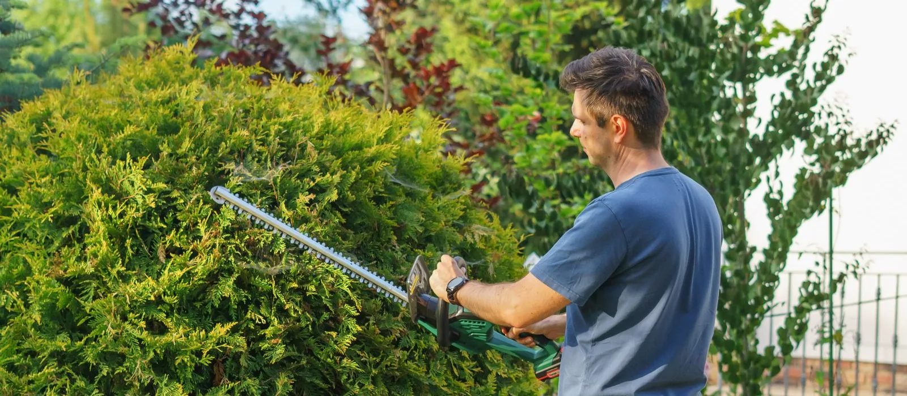

La taille d'entretien de chaque année
Un ou deux passages par an maintiennent le gabarit d'une haie de clôture. La coupe porte sur les pousses de l'année et reste légère. Le végétal ne souffre pas et le résultat tient toute la saison.
Une haie taillée chaque année reste dense et facile à conduire. Laissée trop longtemps sans passage, elle s'élargit, monte et se dégarnit par le bas. LCC Espaces Verts traite aussi bien l'entretien courant que la remise en forme d'une haie oubliée. L'entreprise part de Mérignac et intervient dans toute Bordeaux Métropole.

Photo d'illustrationUn ou deux passages par an maintiennent le gabarit d'une haie de clôture. La coupe porte sur les pousses de l'année et reste légère. Le végétal ne souffre pas et le résultat tient toute la saison.
Une haie qui s'épaissit grignote le jardin et finit par déborder sur le trottoir. La ramener au bon gabarit demande d'entrer dans du bois plus ancien. Nous vérifions d'abord que l'essence supporte ce type de reprise.
Le bas se dégarnit, le haut forme un toit et la lumière ne descend plus. La remise en forme se conduit par étapes, sur plus d'une saison. Un côté est traité, puis l'autre une fois la reprise confirmée.
La coupe suit un profil légèrement plus étroit en haut qu'à la base. Cette forme laisse la lumière atteindre le pied de la haie. Le bas reste garni et la haie continue de jouer son rôle d'écran. Une haie taillée bien droite, ou plus large au sommet, se dénude par le bas en quelques années.
Un cordeau tendu entre deux repères sert de guide pour la hauteur. La ligne se tient ainsi sur toute la longueur, même sur un terrain en pente. Les faces sont reprises avant le dessus, puis le pied est dégagé à la main.
La taille d'entretien retire la pousse de l'année et garde la haie à son gabarit. Le rabattage, lui, consiste à couper court dans le bois ancien pour repartir sur une charpente plus basse. Cette opération demande de la prudence, car elle retire beaucoup de feuillage d'un coup.
Nous étalons donc un rabattage sur au moins deux saisons, un côté après l'autre. La haie conserve assez de feuilles pour se nourrir et repartir correctement. Le calendrier des passages est indiqué dans le devis.
Les haies du secteur mêlent souvent laurier, thuya, charmille, photinia et troène. Le laurier et le photinia repartent bien après une coupe sévère. La charmille garde ses feuilles sèches en hiver et se conduit très bas. Le thuya, comme la plupart des conifères, ne repousse pas sur du bois sans aiguilles. Une coupe trop rentrante y laisse un vide qui ne se comblera pas.
Nous évitons autant que possible la période de nidification, de mars à juillet. Les oiseaux nichent dans les haies denses et un passage de taille-haie détruit les couvées. La fin de l'été et la fin de l'hiver donnent de très bons résultats. Quand une gêne réelle impose d'intervenir plus tôt, la haie est contrôlée avant la coupe.
Les rémanents, c'est-à-dire les branches et le feuillage coupés, forment vite un gros volume. Nous les récupérons sur bâche au fur et à mesure de l'avancement. Selon votre choix, ils sont broyés sur place ou chargés et emportés. Le pied de haie, l'allée et la pelouse sont rendus nets avant le départ.
[[À CONFIRMER : liste du matériel réellement disponible, taille-haies thermiques ou sur batterie, perche télescopique, échafaudage roulant et broyeur]]
[[À CONFIRMER : qualifications et formations de l'équipe]]
L'attestation d'assurance vous est remise avant le début du chantier, sur simple demande.
[[À CONFIRMER : nom de l'assureur, numéro du contrat et étendue de la garantie responsabilité civile professionnelle]]
Aucun tarif fixe n'est affiché, le prix dépend du chantier. Voici les éléments qui pèsent le plus dans le devis.
[[À CONFIRMER : fourchettes de prix indicatives, si l'entreprise accepte de les communiquer]]
[[À CONFIRMER : commune]]
[[À CONFIRMER : commune]]
La fin de l'été et la fin de l'hiver conviennent à la plupart des essences. Nous évitons autant que possible la période de nidification, de mars à juillet. Quand une intervention ne peut pas attendre, la haie est contrôlée avant la première coupe.
Le code civil lie la hauteur autorisée à la distance qui sépare la haie de la limite. Des usages locaux et le plan local d'urbanisme peuvent imposer des règles différentes. Renseignez-vous auprès de votre mairie avant de laisser monter une haie de clôture.
Souvent oui, mais rarement en une seule fois. Nous rabattons un côté, puis l'autre lors d'un passage suivant, pour ne pas épuiser la haie. Sur un thuya déjà dégarni, la reprise reste incertaine et nous vous le disons avant de couper.
Nous intervenons sur l'ensemble de Bordeaux Métropole, au départ de Mérignac.
Une taille de haies se combine souvent avec l'une de ces deux prestations.
Pour une urgence, appelez directement. Le téléphone reste le moyen le plus rapide.